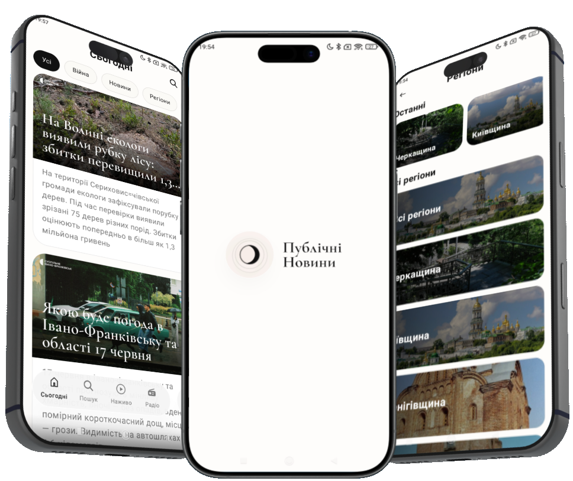
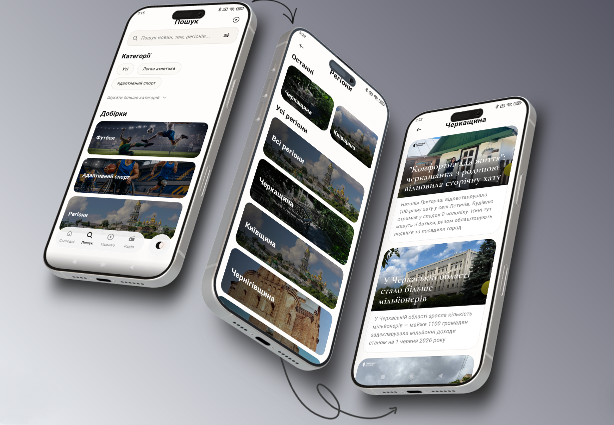
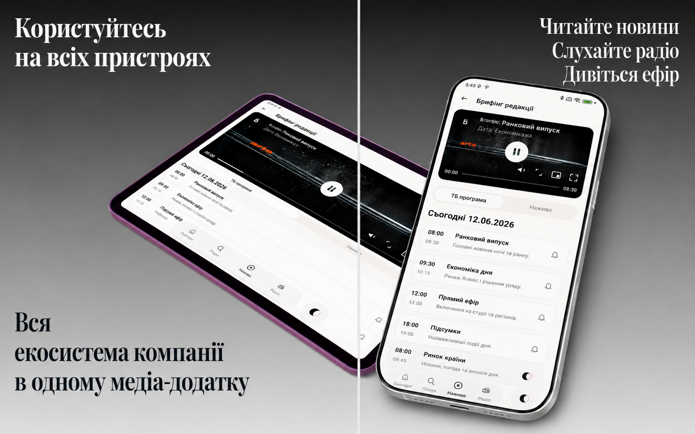

Публічні Новини
Демонстраційний прототип мобільного застосунку

Що входить у прототип
Прототип демонструє основний користувацький шлях: відкриття головної стрічки, перегляд матеріалів, пошук, вибір регіону, перехід до ефіру, роботу з радіо та налаштування інтерфейсу.
Навігація побудована навколо нижнього меню. Основні розділи доступні без додаткових проміжних екранів: сьогодні, пошук, наживо, радіо та налаштування.
Робоча основа для запуску продукту
Це не серія промальованих станів для презентації. Інтерфейс зібраний у реальному коді: з навігацією, медіа-сценаріями, даними, локальним збереженням і платформними інтеграціями.

Головне — одразу
Тематичні добірки та актуальні матеріали. Головний екран відкривається зі стрічки “Сьогодні” та швидких категорій. Користувач бачить заголовок, медіа, короткий опис і може перейти до повного матеріалу.
Окремо продемонстровано перемикання модулів додатку: Новини, Спорт, Культура та Медіатека.
Ефір завжди поруч
Прямі трансляції, телепрограма, повний екран і Picture-in-Picture. Розділ “Наживо” містить перелік доступних трансляцій, а екран каналу — вкладки “ТБ програма” та “Наживо” з поточним розкладом.
Відео можна дивитися у звичайному режимі, розгорнути на весь екран або залишити поверх інших екранів у компактному вікні.
Радіо — в один дотик
Станції, обране, поточна програма та швидке керування. Розділ “Радіо” показує перелік станцій, дозволяє додавати станції в обране, відтворювати ефір одним натисканням і бачити поточний програмний блок.
Також передбачено швидке керування у шторці повідомлень.
Інтерфейс підлаштовується
Тема, формат карток, мова та розмір тексту. У налаштуваннях винесено параметри вигляду застосунку, керування кешем, очищення даних, посилання на правила використання, політику конфіденційності та інформаційні канали.
Окремо буде передбачено доступність для людей з вадами зору: додаток буде адаптований для роботи з VoiceOver і TalkBack, зі збільшеним текстом, чіткою структурою елементів і передбачуваною навігацією.
Розроблено на Kotlin Multiplatform
Прототип побудовано на Kotlin Multiplatform, щоб спільно використовувати бізнес-логіку, моделі даних і частину мережевого шару на Android та iOS. Такий підхід зменшує дублювання коду, спрощує підтримку й створює основу для подальшого розвитку продукту на кількох платформах.

Технічний стек
UI: Compose Multiplatform / Material 3.
Android: AGP 9.2.1, compile/target SDK 36, min SDK 26, JVM 11.
Networking: Ktor 3.5.0, OkHttp на Android, Darwin client на iOS.
Images: Coil 3.4.0.
Storage: SQLDelight 2.3.2 з Android/native драйверами.
Serialization: kotlinx.serialization JSON.
Media: AndroidX Media3 ExoPlayer для Android.
Extras: Lifecycle ViewModel/Runtime Compose, Haze, Google Play in-app update.